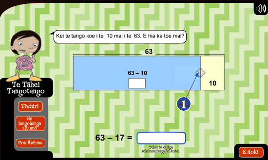
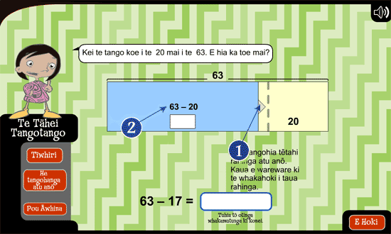
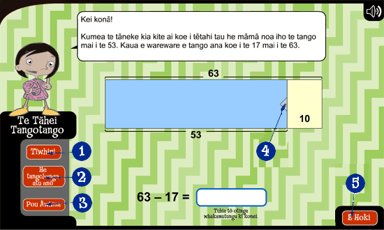

Te Whakamahi i te Tāhei Tangotango
He uaua te tangotango i ētahi tau nui. Mā te wāwāhi i ngā tau nui ki ētahi tau iti e māmā ake ai. Koinei te mahi a te Tāhei Tangotango.


- Mā tēnei tāneke e whakanuia ai te tau e tangohia ana. Kumea te tāneke ki te taha mauī kia hipa atu i te rārangi iraira. I roto i te tauira e whakaaturia ana, kua kumea te tāneke ki te taha mauī ki te whakanui i te 17 ki te 20. Kaua e wareware: Ki te tangohia e koe tētahi rahinga kē atu, me tāpiri anō taua rahinga i te mutunga kia tika ai te otinga.
- Koinei te tangohanga mēnā ka kumea te tāneke mai i te taha matau ki te taha mauī. Whakaotia tēnei tangohanga, ka kukume tonu rānei i te tāneke hei whakamāmā i te tangohanga.

- Pāwhiria te pūtohu Tīwhiri kia kitea ai ētahi rautaki hei āwhina i a koe ki te kimi i te otinga.
- Pāwhiria te pūtohu He Tau Atu Anō, ka hoki anō ai ki te tīmatanga me ētahi tau hou hei mahi māu.
- Pāwhiria te pūtohu Pou Āwhina kia puta ai ngā tohutohu mō te whakamahi i te Tāhei Tangotango.
- Kāore e taea te tāneke te whakahoki ki te taha matau mehemea kua wāwāhia te tau ā, kua tuhia e koe te otinga. Engari e taea ana te kukume ki te taha mauī hei wāwāhi i te tau e tangohia ana ki ētahi tau iti atu anō.
- Pāwhiria te pūtohu E Hoki, ka mahi ai i tētahi huarahi atu anō hei whakaoti i tēnei tangohanga. Kei a koe te whiriwhiri mēnā e hiahia ana koe ki te mahi anō i ēnei tau.